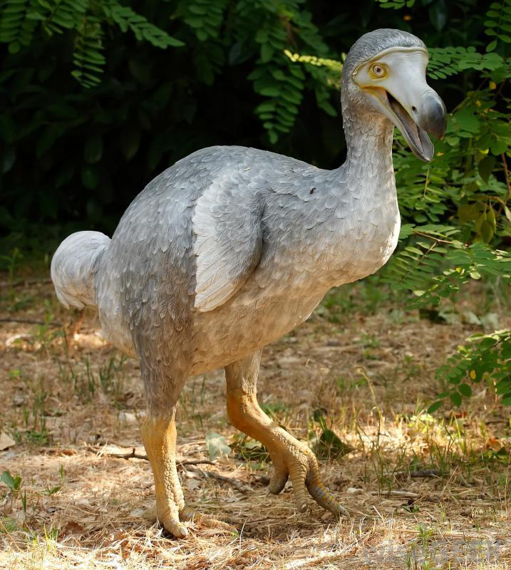
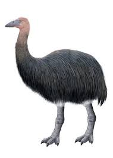
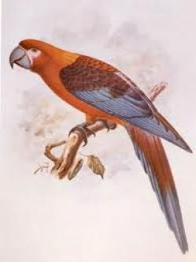
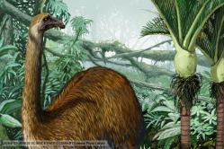

Aves Extintas Alrededor del Mundo
¡En todo el planeta!

El dodo
Célebre ave no voladora, utilizada usualmente como símbolo de la conservación de las especies
para evitar su extinción, habitó la isla de Mauricio hasta 1681, cuando fue abatido el último especimen conocido.
La desaparición de esta maravillosa ave vino de manos de los cazadores, que las abatían por miles y sin control para hacerse
con sus preciadas plumas. También contribuyó a su extinción la introducción en estas islas del océano Índico de otras aves que
competían con ellas.
es un ave que se caracteriza por tener una gran variedad en su dieta, ya que podemos considerarlos por
un lado insectívoros, por otro herbívoros, además de carnívoros y omnívoros. Básicamente, se alimentan de insectos,
frutas, vegetales, nueces, algún que otro animalito chico de pequeño tamaño como anfibios o pequeñas lagartijas.
Leer Mas

Pajaro Elefante
Era la mayor que ha coexistido con el hombre moderno, llegando a medir hasta tres metros.
Habitó Madagascar hasta, por lo menos, el siglo XI; poco se conoce acerca de las causas de su extinción y tampoco está claro en qué
momento se produjo. Los huevos del ave elefante eran gigantes,
Los huevos del ave elefante eran gigantes, de más de treinta centímetros de diámetro, pesaban hasta doce kilos,
soportando nueve litros en su interior y equivalían a doscientos veinte huevos de gallina. Ni siquiera los huevos
de los mayores dinosaurios encontrados hasta hoy alcanzan las dimensiones del huevo de un ave elefante, por lo que
con seguridad hablamos de los huevos más grandes puestos por especie alguna.Hasta hoy, de hecho, se siguen encontrando
huevos de aves elefante, ya sea en fragmentos o en su integridad, sepultados en el lodo de los pantanos.
Cuestión bastante lógica, ya que esta ave vivía casi únicamente en los bosques pantanosos de la isla.
Leer Mas

El guacamayo rojo cubano
Endémico de Cuba, la destrucción de su hábitat así como la caza lo llevaron a la completa extinción hacia 1864.

Moas
Eran aves no voladoras que habitaban en Nueva Zelanda. Se conocen diez especies de diferentes tamaños,
las moas gigantes medían cerca de 3 metros de altura y tenían un peso de 250 kg. Su extinción se produjo hace 500 años, por el ser humano.
Los moas, a diferencia de otras ratites, como el avestruz, el emú, el casuario o el ñandú, durante la evolución habían
perdido completamente las alas, tal como ocurre con los supervivientes kiwis, que se consideraban emparentados con los moas.
Para evitar la sobrepoblación, los moas alcanzaban muy tardíamente su madurez reproductiva: a los diez años de nacidos, como
la especie de moa gigante Dinornis robustus. Esta demora facilitó su extinción, ya que no se dio una suficiente tasa de
reposición ante el ritmo con el que eran cazadas por los maoríes. Los moas se alimentaban de semillas, frutas, hierba e
incluso ramas. Para referirse a estas aves los maoríes usan tanto en singular como en plural la palabra moa sin ese final.
Leer Mas